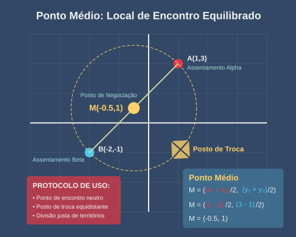
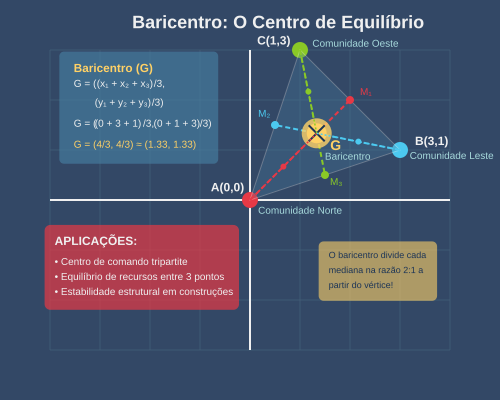
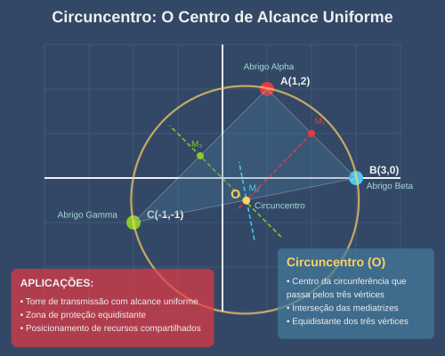
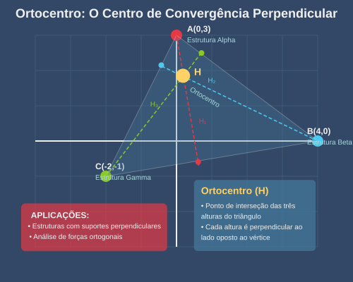
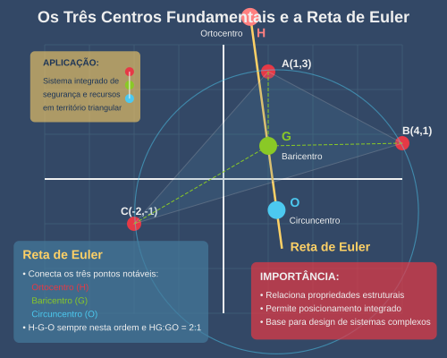

O ponto médio entre \((x_1, y_1)\) e \((x_2, y_2)\) é dado por:
\[ M = \left(\frac{x_1 + x_2}{2}, \frac{y_1 + y_2}{2}\right) \]
O ponto médio representa o equilíbrio perfeito entre dois locais, sendo crucial para:
O Tratado da Confederação do Vale estabeleceu postos neutros de comércio exatamente nos pontos médios entre os cinco principais assentamentos, criando uma rede pentagonal de rotas comerciais que nenhuma comunidade poderia monopolizar.

O baricentro de um triângulo com vértices \((x_1, y_1)\), \((x_2, y_2)\) e \((x_3, y_3)\) é dado por:
\[ G = \left(\frac{x_1 + x_2 + x_3}{3}, \frac{y_1 + y_2 + y_3}{3}\right) \]
Geometricamente, é o ponto de interseção das medianas do triângulo.
O baricentro representa o ponto de equilíbrio perfeito entre três locais, sendo aplicado para:

O circuncentro de um triângulo é o centro da circunferência que passa pelos três vértices. É o ponto de interseção das mediatrizes dos lados.
O circuncentro é essencial em situações onde a equidistância é crucial:
Quando a Grande Tempestade se aproximava, os Engenheiros posicionaram o gerador de campo protetor exatamente no circuncentro da região triangular entre os três principais abrigos, garantindo que todos estivessem exatamente à mesma distância da fonte de proteção.

O ortocentro de um triângulo é o ponto de interseção das três alturas (linhas perpendiculares dos vértices aos lados opostos).
O ortocentro é aplicado em situações onde relações perpendiculares são importantes:
Os Construtores aprenderam da pior maneira possível que, em terrenos triangulares irregulares, o sistema de drenagem central precisa estar no ortocentro, não no baricentro, para que a água flua perpendicularmente aos limites da área.


Gostaria de apresentar alguns problemas que podem parecer desafiadores neste momento do curso, mas que se tornarão mais simples à medida que avançarmos. Porém, é importante refletir sobre isto: se você encontrar o 🧌, talvez esses exercícios estejam difíceis demais com as ferramentas que já vimos até agora. Será que, com ferramentas mais avançadas, eles se tornarão mais fáceis?
Três fontes de água foram descobertas nas coordenadas (3,5), (7,2) e (4,8). Qual delas está mais próxima do abrigo localizado em (2,3)? Justifique calculando as distâncias.
Uma caravana precisa viajar de (0,0) para (9,6). Se eles se deslocam apenas em linhas retas paralelas aos eixos (devido a obstáculos), qual é a distância total percorrida? Compare com a distância euclidiana direta e calcule o "custo adicional" do desvio.
"A matemática é a única ruína que ficou intacta após o colapso." Discuta esta afirmação considerando como o conhecimento do \(\mathbb{R}^2\) sobreviveu à catástrofe.
A Comunidade Oeste precisa enviar recursos para três assentamentos localizados a (5,2), (3,7) e (8,4) a partir de sua base em (0,0). Se cada unidade de distância requer 2 unidades de combustível, e eles desejam otimizar o percurso visitando os três locais antes de retornar, calcule pelo menos duas rotas possíveis e identifique a mais eficiente.
Um novo abrigo será construído a 1.5 vezes a distância do abrigo atual em (4,6) na mesma direção da fonte de água em (7,10). Determine as coordenadas exatas para o novo abrigo.
Um explorador se encontra na posição (8,3) e tem combustível para percorrer 10 unidades de distância. Represente graficamente a região que ele pode explorar e determine se ele pode alcançar os seguintes pontos de interesse: (15,8), (6,-5), (0,0).
Uma expedição se move com velocidade constante representada pelo vetor \(\vec{v} = (3,4)\) km/h. Uma tempestade de radiação cria um vento constante representado pelo vetor \(\vec{w} = (-2,1)\) km/h. Determine:
a) O vetor velocidade resultante
b) A velocidade efetiva (norma do vetor resultante)
c) O desvio angular causado pela tempestade🧌
Três torres de rádio estão localizadas nas coordenadas A(0,0), B(10,0) e C(5,8). Um sinal misterioso é detectado em um local P tal que os vetores \(\overrightarrow{AP}\) e \(\overrightarrow{BP}\) formam um ângulo de 45°, e P está a 6.5 unidades de distância de C. Determine as coordenadas exatas de P.🧌
Três comunidades estão localizadas em A(0,0), B(12,0) e C(6,8). Elas precisam:
a) Construir um posto de troca no baricentro do triângulo
b) Posicionar uma torre de rádio no circuncentro 🧌
c) Instalar um sistema de alarme no ortocentro 🧌
Calcule as coordenadas exatas de cada instalação e a distância entre elas.🧌
Uma região retangular é definida pelos pontos (0,0), (10,0), (10,8) e (0,8). Determine as coordenadas dos pontos médios de cada lado. Se uma patrulha circular seguir o caminho formado pelos pontos médios, qual será a distância total percorrida?
"Quando quatro pontos notáveis de um triângulo coincidem, o triângulo é equilátero." Verifique esta afirmação matematicamente e explique por que triângulos equiláteros são estruturalmente importantes na reconstrução pós-apocalíptica.🧌
O espaço vetorial \(\mathbb{R}^2\) não é apenas um conceito abstrato – é a linguagem fundamental para reconstruir o que foi perdido. Revisitamos:
Os historiadores dizem que, antes da Catástrofe, a matemática era vista como abstrata e distante da "vida real". A ironia é que, quando quase todo o conhecimento prático se perdeu, foram os princípios matemáticos que permitiram às comunidades sobreviventes reconstruir desde o básico.
"Nas cinzas da civilização, redescobrimos que o mundo sempre teve coordenadas – apenas tínhamos nos esquecido de como lê-las."
A jornada através do \(\mathbb{R}^2\) é apenas o começo. Nos próximos capítulos, expandiremos para: